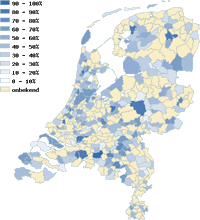

Duurzaamheidsmeter 2008
introductie
Welkom bij de Duurzaamheidsmeter 2008.
U kunt op dit gedeelte van de site de
online vragenlijsten invullen en de
resultaten bekijken voor 2008 (of meest recente gegevens).
De thema's
De bij de Duurzaamheidsmeter 2008 horende vragen zijn samengebracht onder 3 hoofdthema's: klimaat & water, duurzaam & ondernemen en sociaal & mondiaal. Vanaf 2006 voeren we daarnaast specifiek campagne op de vragenlijsten duurzaam inkopen en kantine.
- Per thema is een online vragenlijst beschikbaar.
- Per thema en per vraag zijn de antwoorden van de gemeenten in kaart gebracht. U kunt de specifieke antwoorden van gemeenten bekijken en u kunt per thema de scores van gemeenten in de vorm een ranglijst opvragen.
Hoe werkt de site?- Wanneer u een thema aanklikt, verschijnt een tweede menu waarin u een keuze kunt maken: uitleg over het thema, gemeente, provincie, antwoorden, ranglijst, vragenlijst. Op deze pagina's kunt u doorklikken op de kaarten of in de lijsten om de informatie meer gedetailleerd te bekijken.
- De door u gemaakte selectie in het tweede menu blijft actief als u een ander thema kiest in het eerste menu. Hierdoor kunt u gemakkelijk bv. de resultaten van een specifieke gemeente voor elk thema doorlopen.
Online een vragenlijst invullen?- U kunt eenvoudig online een vragenlijst invullen door bovenin deze pagina een thema te kiezen en vervolgens de keuze "vragenlijst" aan te klikken; u kunt dan direct beginnen met invullen van de vragen. U kunt niet tussentijds stoppen met invullen. We raden dan ook aan om de vragenlijst eerst te downloaden en in te vullen en vervolgens de gegevens op internet in te voeren.
Meedoen/meer informatie?
Bekijk dan de Hoofdsite van de Lokale Duurzaamheidsmeter.
U vindt daar een uitgebreidere beschrijving van het doel van de Lokale Duurzaamheidsmeter, de mogelijkheid tot deelname en een handleiding, resultaten van voorgaande jaren, publicaties en het laatste nieuws.
Opmerkingen over het bekijken en printen van de webpagina's:- We trachten compatible te zijn met recentere versies van de meest gangbare browsers.
In Firefox en Internet Explorer functioneert alles naar behoren. In Netscape, Safari en Opera functioneren de in de pagina's gebruikte tooltips (ballonteksten) zeer gebrekkig. In oude versies van bovengenoemde browsers (incl. de niet verder ontwikkelde browser Mac Internet Explorer) krijgt u slechts een tekstversie van de website te zien.
- Bij het printen van pagina's worden de teksten automatisch in zwarte kleur afgedrukt en niet-essentiële onderdelen achterwege gelaten.